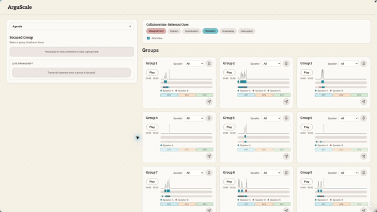
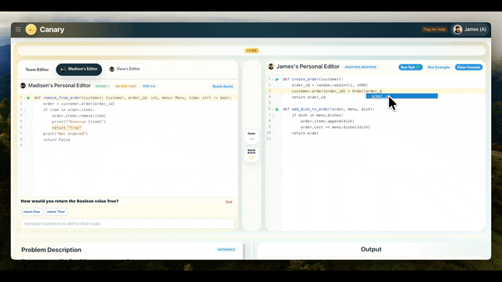

Panayu Keelawat
Human – AI Interaction Researcher
I design and build systems that help people and AI think together, transforming complex conversations, instructions, and data into intuitive tools that extend how people work, reason, and collaborate.
Experience
Education
-
Ph.D., Computer Science
Virginia Tech
Advised by Prof. Yan Chen
Designing human-AI interactions for real-time collaborative learning.
-
M.S., Computer Science
UC San Diego
Advised by Prof. Haijun Xia
Exploring how natural language can expand people's ability to work with and make sense of data.
-
B.Eng., Computer Engineering
Chulalongkorn University · First Class Honors
Advised by Prof. Boonserm Kijsirikul
Researching emotion-driven evolutionary music composition based on EEG signals.
Employment
-
Software Development Engineer
Amazon Alexa · Seattle, WA
Re-architected and maintained the core Alexa calling platform serving millions of calls a day, enabling LLM-driven experiences with Alexa+. Let customers place and drop in on calls through GUI or voice, with call history synced to the Alexa app.
-
Software Engineer
LSEG · Bangkok, Thailand
Built and deployed DTaaS, a cloud platform for inter-bank FX deal tracking moving over $425B in daily transaction volume. Gave traders a single view to monitor, track, and audit deals.
-
Research Intern
The University of Osaka · Osaka, Japan
EEG-based emotion recognition with deep convolutional neural networks.
Publications
-

ArguScale: Evidence-Grounded Human-AI Sensemaking Across Concurrent Live Conversations
Under Minor Revision at CHI 2027
-
FlexGuard: A Design Space for On-Body Feedback for Safety Scaffolding in Strength Training
IMWUT (UbiComp) 2026
-

The Help Ladder: Skill-Adaptive Peer Scaffolding for Real-Time Collaborative Programming
VL/HCC 2026
-

Dynamite: Real-Time Debriefing Slide Authoring through AI-Enhanced Multimodal Interaction
VL/HCC 2025
-

Transforming Procedural Instructions into In-Situ Augmented Reality Guides with InstructAR
UIST Poster 2024
-

NBGuru: Generating Explorable Data Science Flowcharts to Facilitate Asynchronous Communication in Interdisciplinary Data Science Teams
CSCW Poster 2023
-

Towards Understanding Text–Data Connection in Documents through the Lens of Data Operations
M.S. Thesis
-

A Comparative Study of Window Size and Channel Arrangement on EEG-Emotion Recognition Using Deep CNN
Sensors 2021
-

Subject-Independent Emotion Recognition During Music Listening Based on EEG Using Deep Convolutional Neural Networks
CSPA 2019
Teaching
Virginia Tech
Teaching Assistant
- CS 3744 Introduction to GUI Programming and Graphics Fall 2025, Spring 2026, Fall 2026
- CS 3654 Introduction to Data Analytics and Visualization Fall 2024
- CS 3304 Comparative Languages Summer 2026
UC San Diego
Teaching Assistant
- CSS 1 Introductory Programming for Computational Social Science Winter 2022
Chulalongkorn University
Teaching Assistant
- 2110221 Computer Engineering Essentials Semester II, 2019